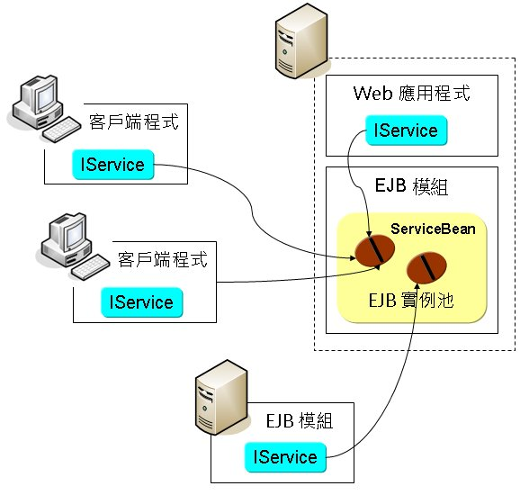

下圖示意兩個客戶端與伺服端Web應用程式可能共用同一個Stateless Session Bean實例的情況，而另一個遠端EJB模組可能取得另一個Bean實例，它們都透過IService進行操作：

一個Stateless Session Bean基本上會有建立與銷毀兩個生命週期事件，當客戶端要求取得Bean時，容器會使用newInstance()建立Bean實例、執行建構子，如果有資源注入，容器會將之注入Bean之中，然後Bean接受使用者呼叫。
對於Stateless Session Bean，您可以使用@PostConstruct標註某個方法，則在Bean被建構之後，容器就會呼叫該回呼（callback）方法，如果有資源需要 注入，則容器是在注入資源之後，再呼叫被@PostConstruct標註的方法。
您可以使用@PreDestroy標注某個方法，顧名思義，就是在Bean被銷毀前（像是過期、不再被使用的Bean實例），容器會呼叫該回呼方法。
回呼方法可以是public、protected、 private、或package-protected，不需要傳回值。
下圖為Stateless Session Bean的生命週期示意圖：